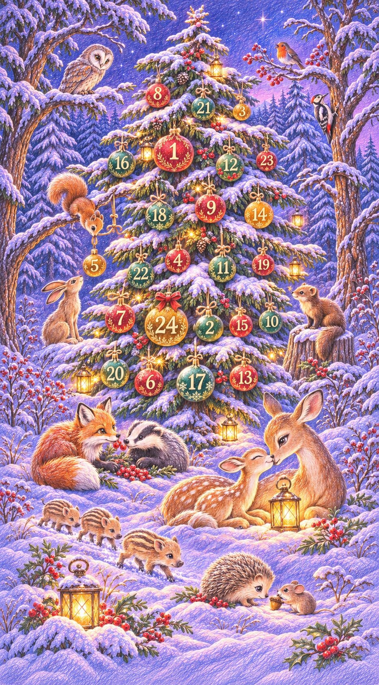

<!doctype html><html lang="de"><meta charset="utf-8"><meta name="viewport" content="width=device-width,initial-scale=1,viewport-fit=cover"><title>Adventsatelier · Winter 2026</title><style>
*{box-sizing:border-box}body{margin:0;background:#101b24;color:#fff4e2;font:16px/1.55 system-ui,sans-serif}main{max-width:840px;margin:auto;padding:18px}header,nav,.row{display:flex;gap:10px;align-items:center;flex-wrap:wrap;justify-content:space-between}header{border-bottom:1px solid #ffffff38;padding-bottom:12px}small,label{font-size:.8rem;letter-spacing:.07em}select,button{font:inherit;color:inherit;background:#22343d;border:1px solid #ffffff45;border-radius:9px;padding:10px 14px;cursor:pointer}button:disabled{opacity:.48;cursor:default}button:focus-visible,select:focus-visible{outline:3px solid gold}button:hover:enabled{border-color:#ffdc8d}h1,h2{font:normal clamp(2rem,6vw,3.6rem)/1.04 Georgia;margin:12px 0}h2{font-size:1.8rem}p{max-width:65ch}canvas{display:block;width:100%;border-radius:14px;margin:16px 0;background:#18273a}.grid{display:grid;grid-template-columns:repeat(8,1fr);gap:7px}.grid button{padding:8px 1px;min-height:44px;font-family:Georgia;font-size:1.22rem}.active{background:#ffdf9c;color:#25202a}article{padding:17px 0}#actions{display:flex;gap:8px;flex-wrap:wrap}#scene{position:relative}#scene button{position:absolute;transform:translate(-50%,-50%);background:transparent;border:0;font-size:clamp(19px,4vw,32px);padding:0;min-width:44px;min-height:44px}.hint{outline:3px dashed gold}footer{margin:24px 0;color:#c7c8bd}input{width:20px;height:20px;vertical-align:middle}@media(max-width:550px){.grid{grid-template-columns:repeat(6,1fr)}main{padding:12px}select{max-width:100%}}

#frame{overflow:hidden;border-radius:14px;margin:1rem 0;isolation:isolate}
#stage{position:relative}
#art{margin:0}
body:not(.inside) #art{height:clamp(320px,56vw,450px);object-fit:cover}
#days{position:absolute;inset:12% 5% 7%;display:grid;grid-template-columns:repeat(6,1fr);grid-template-rows:repeat(4,1fr);gap:clamp(5px,1vw,12px)}
#days button{position:relative;background:radial-gradient(ellipse,#fff2ba,#e7aa56 55%,#684127);padding:0;overflow:visible;border:1px solid #d9ad74;border-radius:4px;box-shadow:0 2px 6px #10131d99;perspective:480px;color:#fff5de;opacity:1}
#days .leaf{display:grid;place-items:center;position:absolute;inset:0;background:linear-gradient(130deg,#263e4bf2,#192732f2);border:2px ridge #d6b884;border-radius:3px;transform-origin:left center;backface-visibility:hidden;font:bold clamp(17px,3.7vw,30px) Georgia}
#days button:disabled .leaf{color:#e0d7c6;background:linear-gradient(130deg,#364650ee,#26343cee)}
#days .active .leaf{background:linear-gradient(120deg,#913f30,#653427);border-color:#ffe4a6}
#days .leaf:after{content:'';position:absolute;right:8%;top:53%;width:4px;height:4px;border-radius:50%;background:#eac788}
.inside #days,.inside #intro,.inside .row,body:not(.inside) #back{display:none}
.inside #panel{animation:appear .35s ease-out}
@keyframes appear{from{opacity:0;transform:translateY(8px)}to{opacity:1;transform:none}}
@media(max-width:510px){#days{grid-template-columns:repeat(4,1fr);grid-template-rows:repeat(6,1fr);inset:8% 5% 5%}body:not(.inside) #art{height:370px}}
@media(prefers-reduced-motion:reduce){.inside #panel{animation:none}}
@keyframes francescaSnow{to{transform:translate3d(var(--wind),520px,0) rotate(90deg)}}@keyframes francescaMeteor{0%,8%{opacity:0;transform:translate(0,0)}10%{opacity:1}23%,100%{opacity:0;transform:translate(-290px,120px)}}@keyframes francescaAurora{from{opacity:.25;transform:translateX(-8%) skewX(-15deg)}to{opacity:.8;transform:translateX(8%) skewX(15deg)}}#scene{overflow:hidden}#scene .fx{position:absolute;inset:0;pointer-events:none;overflow:hidden}#scene .fx .aurora{position:absolute;left:0;right:0;top:0;height:55%;background:linear-gradient(100deg,transparent,#54ffd755,#c764ff55,#72f5ee55,transparent);filter:blur(22px);mix-blend-mode:screen;animation:francescaAurora 12s ease-in-out infinite alternate}#scene .fx .meteor{position:absolute;top:12%;right:6%;width:100px;height:3px;background:linear-gradient(90deg,#fff,transparent);filter:drop-shadow(0 0 5px #aefaff);opacity:0;transform:rotate(-20deg);animation:francescaMeteor 5s linear infinite}#scene .fx .flake{position:absolute;top:-15px;left:var(--left);color:#e9faff;opacity:var(--opacity);font-size:var(--size);animation:francescaSnow var(--duration) linear var(--delay) infinite}@media(prefers-reduced-motion:reduce){#scene .fx *{animation:none!important}} #forest{display:block;width:100%;height:auto;border-radius:14px}#art{display:none!important}#stage{position:relative}#scene{position:relative}#days{position:absolute;inset:0;display:block;pointer-events:none}#days button{position:absolute;transform:translate(-50%,-50%);width:10%;height:5%;min-height:0;border:0;border-radius:50%;background:transparent!important;box-shadow:none!important;pointer-events:auto;opacity:1}#days .leaf{position:absolute;inset:0;background:transparent!important;border:0!important;color:transparent!important;font-size:0!important;transform-origin:0 50%;border-radius:50%;}#days .leaf:after{display:none}#days button:focus-visible{outline:3px solid #fff3a0}#days button:disabled{pointer-events:none}body:not(.inside) #forest{height:auto;object-fit:contain}@media(max-width:510px){#days{display:block;inset:0}body:not(.inside) #forest{height:auto}} 
/* Vollbild-Kalender auf Mobilgeräten */
@media(max-width:700px){html,body{margin:0;width:100%;min-height:100%;overflow-x:hidden}body:not(.inside) main{padding:0;margin:0;max-width:none;width:100%}body:not(.inside) header,body:not(.inside) #tag,body:not(.inside) #title,body:not(.inside) #intro,body:not(.inside) #back,body:not(.inside) #panel,body:not(.inside) #actions,body:not(.inside) #msg,body:not(.inside) article>.row,body:not(.inside) main>.row,body:not(.inside) footer{display:none!important}body:not(.inside) article{padding:0;margin:0}body:not(.inside) #frame{position:fixed;inset:0;width:100vw;height:100dvh;margin:0;border-radius:0;overflow:hidden;background:#142d49}body:not(.inside) #stage,body:not(.inside) #scene{width:100%;height:100%}body:not(.inside) #forest{position:absolute;width:100%;height:100%;inset:0;object-fit:fill;border-radius:0}body:not(.inside) #days{position:absolute;inset:0;width:100%;height:100%}body:not(.inside) #scene .fx{z-index:2}body:not(.inside) #days{z-index:3}}
/* Kugel öffnet sich wie bei Emilia: Bildausschnitt als aufklappende Halbschale */
#days button{perspective:600px;overflow:visible}
#days button.active{background:radial-gradient(circle,#fffbe0 5%,#ffca61 34%,#a143c5 65%,#120b40 90%)!important;box-shadow:0 0 16px #ffe482!important}
#days button .leaf{background-image:url('waldlichtung-breit.svg')!important;background-size:1000% 2000%!important;background-position:var(--bx) var(--by)!important;background-repeat:no-repeat!important;backface-visibility:visible!important;transform-origin:left center!important;opacity:1!important}
#days button.active .leaf{box-shadow:inset 0 0 4px #fff8,0 0 4px #ffecb5;border-radius:50%}

/* Originalbild unverzerrt; freie Displayränder mit passender Waldkulisse auffüllen */
@media(max-width:700px){body:not(.inside) #scene{isolation:isolate;background:#132339}body:not(.inside) #scene::before{content:"";position:absolute;inset:-28px;background:url('waldlichtung-breit.svg') center center/cover no-repeat;filter:blur(24px) brightness(.72);transform:scale(1.09);z-index:0}body:not(.inside) #forest{object-fit:contain!important;z-index:1}body:not(.inside) #scene .fx{z-index:2}body:not(.inside) #days{z-index:3}body:not(.inside) #days button{pointer-events:none}body:not(.inside) #days button.active{pointer-events:auto}}
/* Originalformat mit passender Randauffüllung statt Verzerrung */
@media(max-width:700px){body:not(.inside) #frame{display:grid;place-items:center;isolation:isolate}body:not(.inside) #frame::before{content:"";position:absolute;inset:-24px;background:url('waldlichtung-breit.svg') center/cover no-repeat;filter:blur(22px) brightness(.72);z-index:-1}body:not(.inside) #stage{position:relative!important;width:min(100vw,44.444444dvh)!important;height:auto!important;aspect-ratio:800/1800;max-height:100dvh}body:not(.inside) #scene{position:absolute!important;inset:0!important;width:100%!important;height:100%!important;overflow:visible}body:not(.inside) #scene::before{display:none!important}body:not(.inside) #forest{inset:0!important;width:100%!important;height:100%!important;object-fit:fill!important}body:not(.inside) #days{inset:0!important;width:100%!important;height:100%!important}body:not(.inside) #days button{width:11%!important;height:4.8%!important}}
body:not(.inside) #frame{position:fixed;inset:0;width:100%;height:100dvh;display:grid;place-items:center;margin:0;border-radius:0;background:center/cover url(waldlichtung-breit.svg)}
body:not(.inside) #stage{width:min(100vw,46.15385dvh)!important;height:auto!important;aspect-ratio:934/1684;max-height:none}
@media (orientation:portrait) and (max-width:600px) and (min-aspect-ratio:6/13) and (max-aspect-ratio:3/5){body:not(.inside) #stage{width:100vw!important}}
#frame{overflow:hidden}body:not(.inside) #days button{width:var(--w)!important;height:var(--h)!important;pointer-events:auto}#days button .leaf{background:none!important}#days button.revealing{background:radial-gradient(#fffae6,#ffce68,#72464d)!important}#days button.revealing .leaf{background:url(waldlichtung-breit.svg) var(--pos)/var(--img) no-repeat!important}
.inside #frame,.inside #intro,.inside #title,.inside #tag,.inside header{display:none}
body:not(.inside) #frame{display:block;background:#132339}
body:not(.inside) #frame::before{display:none}
body:not(.inside) #stage{position:absolute!important;top:50%;left:50%;translate:-50% -50%;width:min(100vw,55.46319dvh)!important;aspect-ratio:934/1684}
@media (orientation:portrait) and (max-width:700px){body:not(.inside) #stage{width:max(100vw,55.46319dvh)!important}}
body:not(.inside) #forest{object-fit:contain!important;border-radius:0}

@keyframes francescaSnow {
  to { transform:translate3d(var(--wind),calc(115dvh + 24px),0) rotate(var(--turn)); }
}
@keyframes francescaMeteor {
  0%,8% { opacity:0; transform:translate(0,0) rotate(-20deg); }
  11% { opacity:.96; }
  28%,100% { opacity:0; transform:translate(-145%,7dvh) rotate(-20deg); }
}
@keyframes francescaAurora {
  from { opacity:.45; transform:translateX(-7%) skewX(-13deg) rotate(-12deg); }
  to { opacity:.85; transform:translateX(8%) skewX(10deg) rotate(-4deg); }
}
#scene .fx .aurora {
  left:55%; right:12%; top:4%; height:10%;
  background:repeating-linear-gradient(108deg,#acffe429 0 1px,transparent 2px 5px),
    linear-gradient(115deg,transparent 6%,#a88dff99 29%,#7cf5d5bd 53%,#b2ffe788 69%,transparent 95%);
  mask-image:radial-gradient(ellipse,#000 15%,transparent 72%);
  filter:blur(2px);
  mix-blend-mode:screen;
}
#scene .fx .meteor {
  top:6%; right:12%; width:clamp(84px,29%,200px); height:4px;
  border-radius:90% 30% 30% 90%;
  background:linear-gradient(90deg,#fff9e6 0 3%,#ffcfa3b0 10%,#d8c2ffaa 33%,transparent 98%);
  filter:drop-shadow(0 0 3px #f5d3c9);
}
#scene .fx .flake {
  width:var(--size); height:var(--size);
}
#scene .fx .flake::before {
  content:""; display:block; width:100%; height:100%;
  background:linear-gradient(25deg,#aeb3ed 8%,#f6dfc9 54%,#fff4e9 76%,#c6bbeb);
  clip-path:polygon(50% 0,55% 8%,55% 40%,87% 21%,96% 26%,60% 50%,98% 69%,89% 76%,55% 58%,55% 99%,46% 96%,46% 57%,12% 80%,4% 74%,40% 51%,3% 31%,9% 22%,46% 42%,46% 5%);
  animation:crystal-shimmer var(--glint) ease-in-out infinite alternate;
}
@keyframes crystal-shimmer {
  from { opacity:.53; transform:scaleX(.72); }
  to { opacity:1; transform:scaleX(1); }
}
@media(prefers-reduced-motion:reduce) { #scene .fx { display:none; } }
.calendar-test{position:fixed;top:max(9px,env(safe-area-inset-top));left:max(9px,env(safe-area-inset-left));z-index:8;display:flex;align-items:center;gap:6px;padding:7px 10px;border:1px solid #ffffff65;border-radius:18px;background:#101b24e8;color:#fff4e2;line-height:1}.calendar-test input{margin:0;width:18px;height:18px}.inside .calendar-test{display:none}</style><main><header><b>✦ Adventsatelier</b><small>WINTER 2026</small><select id="world" aria-label="Kalender wählen"></select></header><article><small id="tag"></small><h1 id="title"></h1><p id="intro"></p><div id="frame"><div id="stage"><div id="scene"><canvas id="art" width="800" height="360" aria-label="Illustrierte Winterwelt"></canvas><div class="fx" aria-hidden="true"><div class="aurora"></div><div class="meteor"></div></div></div><div class="grid" id="days"></div></div></div><button id="back">Zurück zum Kalender</button><div id="panel" tabindex="-1"></div><div id="actions"></div><p id="msg" role="status"></p></article><div class="row"><h2>Dezember</h2></div><footer><button id="music">♫ Musik einschalten</button> <span id="saved"></span></footer><label class="calendar-test"><input type="checkbox" id="test"> Testmodus</label></main><script>
const worlds=[
null,
null,
['Francesca','Das Geheimnis des magischen Dorfes','DIE SPUR IM MONDLICHT','Jede Nacht verschwindet eine Farbe aus dem Dorf. Francesca und ihr bester Freund jagen mit einem Pony dem ersten violetten Hufabdruck hinterher.','Wer hat den Schnee lila angemalt?','Ein winziges Pony schnaubt vor dem Stall. Sein Schatten hat ein Horn! Francescas bester Freund entdeckt zwei Spuren hinter dem Zaun.','Glitzerhufen folgen','Dem Rascheln nachgehen','In einem Hufabdruck liegt eine warme Sternperle.','Unter dem Busch hockt ein zotteliger Nachtfalter. Er landet auf deiner Mütze.','Die Perle leuchtet neben dem Brunnen. Im Wasser sieht Francesca ein Dorf mit einem violetten Mond.','Der Falter kitzelt Francescas Nase und fliegt zum Brunnen. Sein Spiegelbild trägt eine kleine Krone.'],
null,
null
];
const fixed=2;
const $=id=>document.getElementById(id),world=$('world'),dayGrid=$('days'),ctx=$('art').getContext('2d');let w=fixed??0,step=0,choice=0,playing=false,deadline=0,clock=0,found=[],hints=0,sequence=[],progress={},audio=null,musicTimer;
const now=new Date(),dateKey=now.getFullYear()*10000+(now.getMonth()+1)*100+now.getDate();$('test').checked=new URLSearchParams(location.search).has('test');
function save(){if($('test').checked){$('saved').textContent='Testmodus · nicht gespeichert';return}try{localStorage.setItem('advent26-v1-'+w,JSON.stringify(progress));$('saved').textContent='Lokal gespeichert'}catch{$('saved').textContent='Speicherung hier nicht verfügbar'}}
function act(label,fn){let b=document.createElement('button');b.textContent=label;b.onclick=fn;$('actions').append(b);return b}
function scene(){let c=ctx,t=Date.now()/2000,phase=dateKey>=20261220?3:dateKey>=20261213?2:dateKey>=20261206?1:0;let palettes=[['#142d49','#d68870'],['#292446','#d9a26c'],['#312450','#a998dc'],['#141820','#776331'],['#473441','#bf8966']];let [a,b]=palettes[w],g=c.createLinearGradient(0,0,0,360);g.addColorStop(0,a);g.addColorStop(1,b);c.fillStyle=g;c.fillRect(0,0,800,360);function rect(x,y,ww,h,color){c.fillStyle=color;c.fillRect(x,y,ww,h)}function poly(points,color){c.beginPath();points.forEach(([x,y],i)=>i?c.lineTo(x,y):c.moveTo(x,y));c.closePath();c.fillStyle=color;c.fill()}function circle(x,y,r,color){c.beginPath();c.arc(x,y,r,0,7);c.fillStyle=color;c.fill()}
circle(632-phase*64,65,32,'#fff0ce');for(let i=0;i<45;i++)circle(i*173%800,i*47%165,1.3,'#ffead1');
if(w===0||w===3){for(let i=0;i<6;i++){rect(0,155+i*17,800,14,i%2?'#38414d':'#283443');for(let j=0;j<72;j++)rect(j*12+(i%2)*5,158+i*17,4,3,w===3?'#e5bd47':'#c89a83')}poly([[0,256],[800,256],[800,360],[0,360]],w===3?'#55583c':'#386360');c.strokeStyle='#dae1cd';c.lineWidth=3;c.strokeRect(306,244,186,65);c.strokeRect(280,309,240,42);for(let x of [65,735]){rect(x,57,5,100,'#1e3044');rect(x-26,53,55,10,'#fff3bf');poly([[x-26,63],[x+28,63],[x+100,215],[x-100,215]],'#fff4ba18')}}
else if(w===4){rect(52,38,190,171,'#ddba89');rect(60,46,174,155,'#435974');for(let i=0;i<15;i++)circle(65+i*43%160,53+i*33%140,2,'#fff');rect(143,40,7,170,'#e3c99b');rect(54,128,184,7,'#e3c99b');for(let k=0;k<2;k++){for(let i=0;i<24;i++){let h=25+i*17%41;rect(300+18*i,105+89*k-h,13,h,['#80716e','#a96752','#6c8581','#ceab70'][i%4])}rect(290,105+89*k,465,9,'#573e38')}rect(0,243,800,117,'#846352');for(let i=0;i<17;i++){let x=i*59%780,y=257+i*29%89;rect(x,y,22,8,['#bc866d','#c4ad87','#6a8983'][i%3]);circle(x+10,y-5,5,'#68494a')}}
else {poly([[0,200],[120,97],[223,192],[398,91],[570,180],[694,110],[800,173],[800,360],[0,360]],'#514f69');for(let i=0;i<30;i++){let x=i*83%800,y=156+i*21%86;poly([[x,y-45],[x-20,y+22],[x+20,y+22]],'#374c52')}poly([[0,241],[240,224],[470,245],[800,212],[800,360],[0,360]],'#ddd7e0');for(let i=0;i<5;i++){let x=22+i*162,y=199+(i%2)*25;rect(x,y,92,60,'#785c64');poly([[x-9,y],[x+44,y-41],[x+101,y]],'#eedee2');rect(x+13,y+17,18,21,'#ffdc90');rect(x+60,y+17,16,21,'#ffdc90')}if(w===1){rect(0,319,800,5,'#675052');for(let i=0;i<3;i++){rect(220+i*100,264,96,44,'#384651');for(let j=0;j<4;j++)rect(228+i*100+j*22,272,15,15,'#ffd991');circle(238+i*100,312,9,'#433744');circle(298+i*100,312,9,'#433744')}}}
if(w!==4)for(let i=0;i<54;i++)circle((i*61+Math.sin(t+i)*7+800)%800,(i*71+t*12)%360,1+i%2,'#ffffffb0');}
setInterval(scene,matchMedia('(prefers-reduced-motion: reduce)').matches?60000:120);
function clear(){clearInterval(clock);playing=false;$('panel').replaceChildren();$('actions').replaceChildren();$('msg').textContent='';document.querySelectorAll('#scene button').forEach(b=>b.remove())}
function panel(title,body){let h=document.createElement('h2'),p=document.createElement('p');h.textContent=title;p.textContent=body;$('panel').append(h,p)}

let opening=false,day=1;
function motion(){return !matchMedia('(prefers-reduced-motion: reduce)').matches}
function zoomFrames(button){
 const stage=$('stage'), box=stage.getBoundingClientRect(), target=button.getBoundingClientRect();
 const x=target.left-box.left+target.width/2,y=target.top-box.top+target.height/2;
 stage.style.transformOrigin=x+'px '+y+'px';
 return [{transform:'none'},{transform:'translate('+(box.width/2-x)+'px,'+(box.height/2-y)+'px) scale(22)'}];
}
async function openDoor(number=1){
 if(opening)return;
 const button=dayGrid.children[number-1];if(!button||button.disabled)return;
 opening=true;day=number;
 try{
 if(motion()){
 button.classList.add('revealing');
 const lid=button.firstChild.animate([{transform:'rotateY(0deg)'},{transform:'rotateY(-115deg)'}],{duration:1000,fill:'forwards'});
 await lid.finished;
 await $('stage').animate(zoomFrames(button),{duration:2000,easing:'ease-in-out'}).finished;
 lid.cancel();button.classList.remove('revealing');
 }
 document.body.classList.add('inside');clear();panel(number+'. Dezember','');$('panel').focus();
 }finally{opening=false}
}
$('back').onclick=async()=>{if(opening)return;opening=true;try{home();const b=dayGrid.children[day-1];if(motion())await $('stage').animate(zoomFrames(b).reverse(),{duration:2000,easing:'ease-in-out'}).finished;b.focus({preventScroll:true})}finally{opening=false}};
function grid(){dayGrid.replaceChildren();[[428,376,49],[517,804,35],[595,273,24],[438,640,35],[233,653,29],[367,941,35],[295,781,37],[389,235,30],[519,510,39],[667,793,30],[547,662,36],[567,410,37],[601,927,37],[637,529,36],[594,802,30],[299,401,35],[480,944,46],[392,532,39],[647,649,28],[284,920,38],[504,267,30],[345,674,37],[657,395,29],[410,801,55]].forEach(([x,y,r],i)=>{
 const size=2*r,b=document.createElement('button'),leaf=document.createElement('span');
 leaf.className='leaf';b.append(leaf);b.setAttribute('aria-label','Kugel '+(i+1));b.disabled=!$('test').checked && new Date()<new Date(2026,11,i+1);
 b.style.cssText='left:'+x/934*100+'%;top:'+y/1684*100+'%;--w:'+size/934*100+'%;--h:'+size/1684*100+'%;--img:'+934/size*100+'% '+1684/size*100+'%;--pos:'+(x-size/2)/(934-size)*100+'% '+(y-size/2)/(1684-size)*100+'%';
 b.onclick=()=>openDoor(i+1);dayGrid.append(b);
})}
function home(){document.body.classList.remove('inside');clear();let d=worlds[w];$('tag').textContent=d[2];$('title').textContent=d[1];$('intro').textContent=d[3];try{progress=JSON.parse(localStorage.getItem('advent26-v1-'+w))||{}}catch{progress={}}$('saved').textContent=progress.done?'1 von 24 geöffnet':'';scene();grid();if($('test').checked||dateKey>=20261201)act(progress.done?'Erstes Türchen erneut spielen':'Erstes Türchen öffnen',()=>openDoor(1))}
function start(){clear();let d=worlds[w];panel(d[4],d[5]);if(w===4)act('Suche starten · 60 Sekunden',hunt);else for(let i=0;i<2;i++)act(d[6+i],()=>{choice=i;clear();panel(d[4],d[8+i]);if(w===3)code();else act(['Zum Spielertunnel','Den ersten Halt ausrufen','Zum Dorfbrunnen'][w],()=>finish(d[10+i]))});$('panel').scrollIntoView({block:'center'})}
function finish(s){clear();progress={done:true,choice,ending:s};save();panel('Erste Seite im Winteralbum',s);grid();act('Zur Kalenderwelt',home)}
function code(){let keys=choice?['Mitte','Links','Rechts']:['Rechts','Mitte','Links'];sequence=[];$('msg').textContent='Funkfolge merken: '+keys.join(' → ');act('Funkfolge eingeben',()=>{$('actions').replaceChildren();$('msg').textContent='Tippe die drei Sektoren in der richtigen Reihenfolge.';for(let k of ['Links','Mitte','Rechts'])act(k,()=>{if(k!==keys[sequence.length]){sequence=[];$('msg').textContent='Funkstörung. Noch einmal: '+keys.join(' → ');return}sequence.push(k);$('msg').textContent=sequence.join(' → ');if(sequence.length===3)finish(worlds[w][10+choice])})})}
const objects=[['Schlüssel','🗝️',73,54],['Brief','✉️',27,82],['Taschenuhr','⌚',88,86],['Garn','🧶',9,74],['Kerze','🕯️',37,58],['Pinsel','🖌️',54,77],['Feder','🪶',60,28],['Brille','👓',35,28],['Tasse','☕',66,88]];
function hunt(){clear();playing=true;found=[];hints=0;deadline=Date.now()+60000;panel('Das verlassene Atelier','Finde Schlüssel, Brief und Taschenuhr im Bild.');function tick(){let left=Math.ceil((deadline-Date.now())/1000);if(left<=0){clear();panel('Die Atelieruhr schlägt','Du kannst die Suche noch einmal beginnen.');act('Erneut suchen',hunt);return false}$('msg').textContent=left+' s · '+found.length+'/3 gefunden · '+hints+' Hinweise';return true}objects.forEach(([name,icon,x,y],i)=>{let b=document.createElement('button');b.textContent=icon;b.setAttribute('aria-label',name);b.style.left=x+'%';b.style.top=y+'%';b.dataset.obj=i;$('scene').append(b);b.onclick=()=>{if(!playing||!tick()||i>2||found.includes(i))return;found.push(i);b.hidden=true;if(found.length===3){let points=Math.max(0,300+Math.ceil((deadline-Date.now())/1000)*5-hints*50);finish('Unter dem Brief liegt eine Eintrittskarte für zwei. Deine erste Albumseite ist komplett. '+points+' Punkte.')}else tick()}});act('Hinweis · −50 Punkte',()=>{if(!tick())return;let b=[...document.querySelectorAll('#scene button')].slice(0,3).find(b=>!b.hidden);if(!b.classList.contains('hint')){b.classList.add('hint');hints++}tick()});clock=setInterval(tick,250);tick();$('scene').scrollIntoView({block:'center'})}
worlds.forEach((d,i)=>{if(d&&(fixed===null||i===fixed))world.add(new Option(d[0],i))});world.onchange=()=>{w=Number(world.value);home()};$('test').onchange=grid;
$('music').onclick=async()=>{if(audio){clearInterval(musicTimer);await audio.close();audio=null;$('music').textContent='♫ Musik einschalten';return}audio=new (window.AudioContext||window.webkitAudioContext)();await audio.resume();let n=0;function note(){let o=audio.createOscillator(),g=audio.createGain(),t=audio.currentTime;o.frequency.value=[392,494,587,494,440,523,659,523][n++%8];g.gain.setValueAtTime(.0001,t);g.gain.exponentialRampToValueAtTime(.045,t+.03);g.gain.exponentialRampToValueAtTime(.0001,t+.7);o.connect(g);g.connect(audio.destination);o.start();o.stop(t+.72)}note();musicTimer=setInterval(note,750);$('music').textContent='♫ Musik ausschalten'};for(let i=0;i<55;i++){let f=document.createElement('span');f.className='flake';f.style.cssText=`--left:${Math.random()*100}%;--opacity:${.22+Math.random()*.57};--size:${2.5+Math.random()*6}px;--duration:${8+Math.random()*11}s;--delay:${-Math.random()*19}s;--wind:${(Math.random()-.5)*85}px;--turn:${Math.random()*280-140}deg;--glint:${1.6+Math.random()*3}s`;$('scene').querySelector('.fx').append(f)}home();
</script></html>
